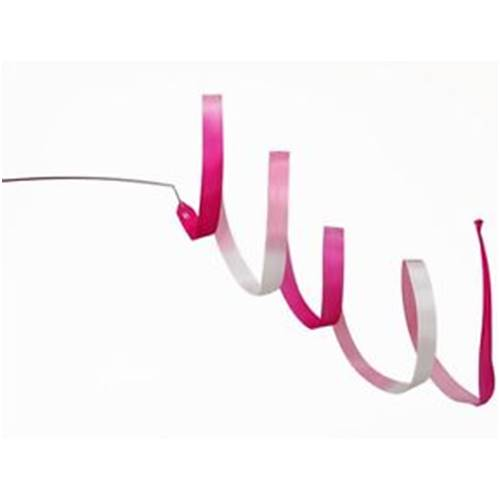

Ball
Reifen

Band

Keulen

Seil
In diesem Blog möchte ich Ihnen ein paar Eindrücke in das Training, die Wettkämpfe und die Shows der Mädchen der rhythmischen Sportgymnastik der TSG Wiesloch liefern. In unserem Verein werden die Mitglieder je nach Alter und Leistung in 4 verschiedene Gruppen eingeteilt:
Als Trainerin der 3. Gruppe werde ich hier hauptsächlich auf diese eingehen. Viel Spaß beim Lesen! :)
Es handelt sich hierbei um einen Hochleistungssport, der eng mit Ballet und Gymnastik zusammenhängt. Die Elemente, werden hier mit jeweils einem der 5 offiziellen Geräte geturnt. Diese wären:
Ball
Reifen
Band
Keulen
Seil
Allgemein wird die rhythmische Sportgymnastik in 2 Teilgebiete unterteilt:
Unser Verein befasst sich eher mit dem 2. Gebiet. Der Unterschied liegt hier nur darin, dass manche Elemente (auch Schwierigkeiten genannt) nicht gezeigt werden dürfen, da sie gesundheitsschädlich sind. Beispiele dafür wären die Brücke, Bogengänge oder allgemein Teile, bei denen der Rücken stark beansprucht wird. Außerdem wird bei der K-Stufe, im Gegensatz zur RSG, eine Schwierigkeit nur dann gewertet, wenn eine bestimmte Technik mit dem Handgerät durchgeführt wird. Diese Schwierigkeiten bestehen grundlegend auch aus 4 Kategorien:
Wenn sie genaueres über diese Elemente erfahren möchten, kann ich Ihnen den offiziellen Schwierigkeitskatalog des DTB empfehlen:
Seit Anfang 2017 trainiere ich eine Gruppe und habe auch eine Trainerausbildung absolviert.